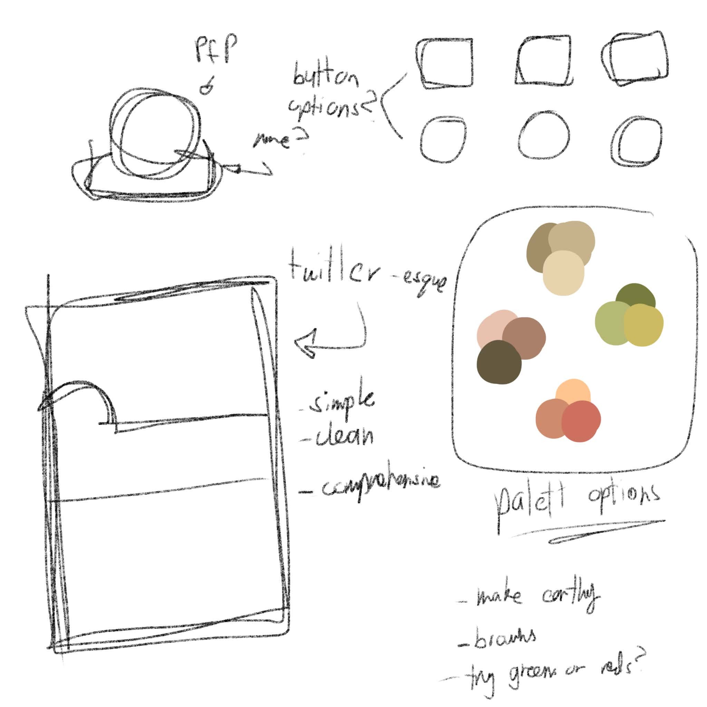
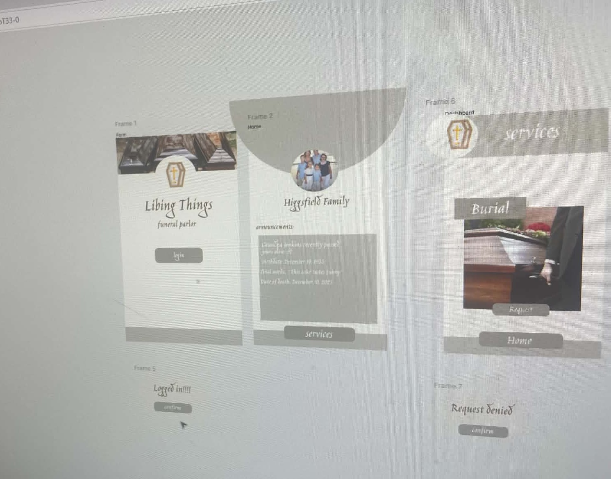

UI/UX design for Libing Things


tech stacks used on this are Procreate for the sketches and planning of what to use, then I had Figma to map out the design
and create a prototype
The company's been having trouble trying to come up with a good way to create UI due to the company's primary mode of work.
The designs are either too gloomy or dead. Solutions created were to at least change the colour palette to create something that both still exudes warmth
without sacrificing the app's core themes. Proposed solutions were to also start from the ground up, but I instead salvaged some of the UI and transformed it
into something familiar and simple. This way, the app now looks fine and approachable without needing to look too 'edgy'